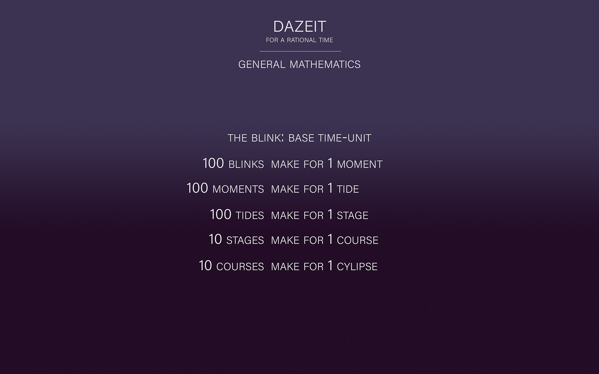
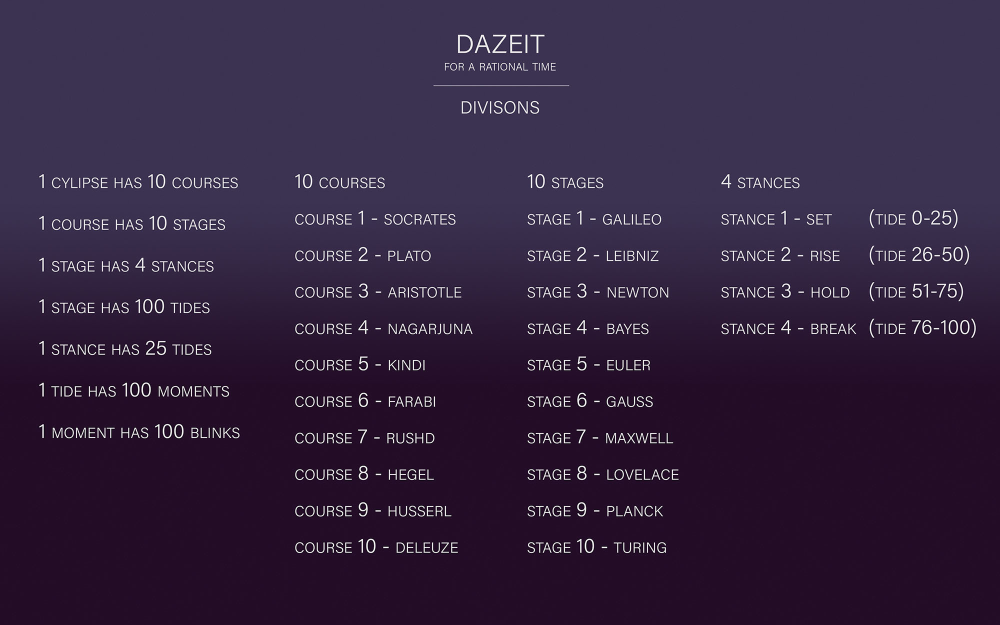
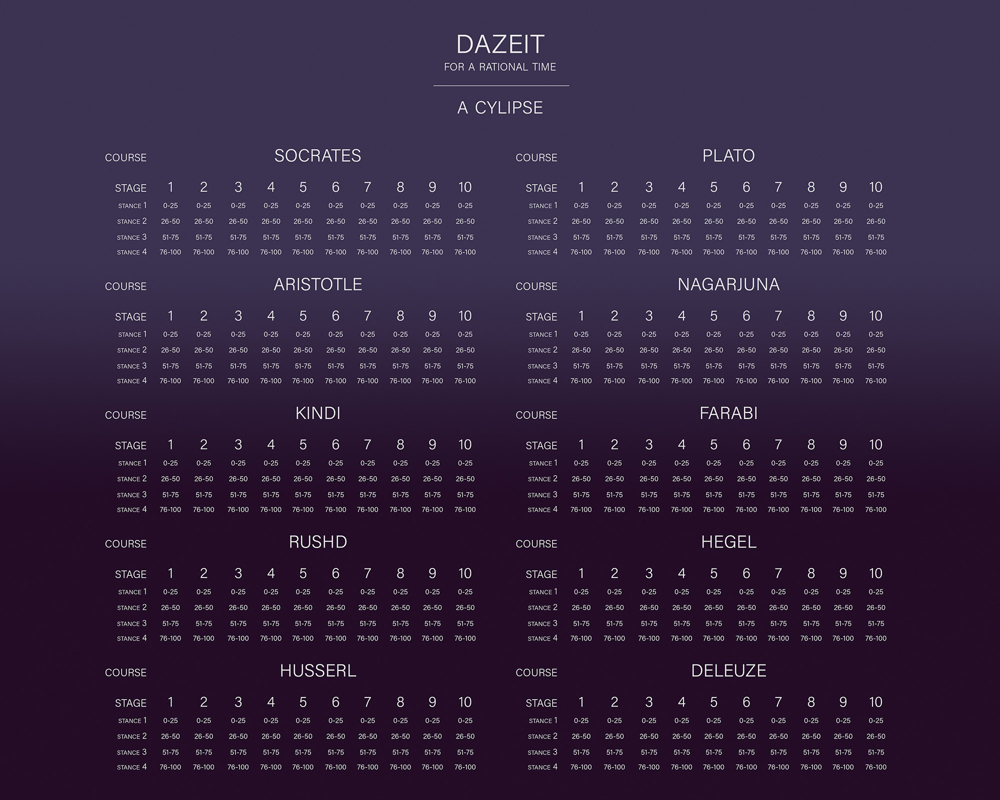

We call it 'the calendar', and it has 12 months, that have sometimes 30 or 31, or even 28 or 29 days, that have 24 hours each, that have 60 minutes each. How did we get ourselves into this mess? It's time for a new time, a rational time. Starting with the name itself: the calendar.
The calendar is called thus because it comes from the way Latin Romans called the first day of the month, that is, calendae. But we are not Romans and we definitely do not speak Latin, do we?
A rational time - a time of reason, a time of here, Dazeit. One could possibly say that only that which has reason can be actually called time. We cannot really go beyond 9500 HE in search for reason (not to even speak of the billion years of the pluriverse). Reason is a thing invented&manufactured around 9602 HE, surrounding the talks and death of Socrates. Reason, that is the secretion of a need to pursue the question 'why is that like that?' and to follow that need no matter what.
The code can be seen on github.
The Rational Time presented here has as fundamental unit of time the blink.
One blink is equal to 0.31558149504 seconds. The reason for this number and not other is that our planet, Terra, needs 31558149.504 seconds to rotate around our star, Sol, or, in Rational Time, 100,000,000.00 blinks.
100 blinks make a moment
100 moments make a tide
100 tides make a stage
10 stages make a course
10 courses make a cylipse
The 100 tides are divided into four stances:
stance 1. Set - tides 0-25
stance 2. Rise - tides 26-50
stance 3. Hold - tides 51-75
stance 4. Break - tides 76-100
The 10 stages are:
stage 1. Galileo
stage 2. Leibniz
stage 3. Newton
stage 4. Bayes
stage 5. Euler
stage 5. Gauss
stage 6. Maxwell
stage 8. Lovelace
stage 9. Planck
stage 10. Turing
The 10 courses are:
course 1. Socrates
course 2. Plato
course 3. Aristotle
course 4. Nagarjuna
course 5. Kindi
course 6. Farabi
course 7. Rushd
course 8. Hegel
course 9. Husserl
course 10. Deleuze
The following images synthesize the inception:
  {kind=link}
{kind=link}
{kind=link}